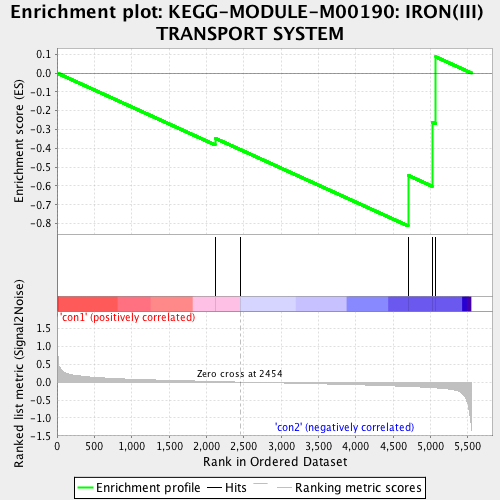

| | | Dataset | Anr_gene.AnrvsWT.cls#con1_versus_con2 |
| Phenotype | AnrvsWT.cls#con1_versus_con2 |
| Upregulated in class | con2 |
| GeneSet | KEGG-MODULE-M00190: IRON(III) TRANSPORT SYSTEM |
| Enrichment Score (ES) | -0.8126278 |
| Normalized Enrichment Score (NES) | -1.5649229 |
| Nominal p-value | 0.03107861 |
| FDR q-value | 0.20181748 |
| FWER p-Value | 0.983 |
Table: GSEA Results Summary

Fig 1: Enrichment plot: KEGG-MODULE-M00190: IRON(III) TRANSPORT SYSTEM
Profile of the Running ES Score & Positions of GeneSet Members on the Rank Ordered List
| PROBE | DESCRIPTION
(from dataset) | GENE SYMBOL | GENE_TITLE | RANK IN GENE LIST | RANK METRIC SCORE | RUNNING ES | CORE ENRICHMENT | | 1 | PA3538 | na | | | 2118 | 0.016 | -0.3467 | No |
| 2 | PA4687 | na | | | 2452 | 0.000 | -0.4066 | No |
| 3 | PA4688 | na | | | 4704 | -0.122 | -0.5441 | Yes |
| 4 | PA5216 | na | | | 5026 | -0.155 | -0.2607 | Yes |
| 5 | PA5217 | na | | | 5072 | -0.161 | 0.0859 | Yes |
Table: GSEA details [plain text format]
Fig 2: KEGG-MODULE-M00190: IRON(III) TRANSPORT SYSTEM
Blue-Pink O' Gram in the Space of the Analyzed GeneSet
Fig 3: KEGG-MODULE-M00190: IRON(III) TRANSPORT SYSTEM: Random ES distribution
Gene set null distribution of ES for KEGG-MODULE-M00190: IRON(III) TRANSPORT SYSTEM